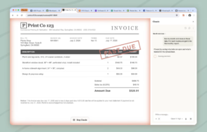

Claude dans Chrome intègre désormais Cowork, avec vos compétences et connecteurs

🔥 Top produits tech du moment
Publicité — Liens de partenariat Amazon : une commission peut être reversée, sans surcoût pour vous.
L'actualité tech ne cesse d'évoluer. Nouveaux produits, acquisitions, découvertes : chaque jour apporte son lot d'informations importantes pour comprendre le monde numérique de demain.
Ce qu'il faut retenir
Le panneau latéral de Claude dans Chrome exécute désormais une session Cowork.
Les conversations, les compétences et les connecteurs peuvent passer du navigateur aux applications de bureau, web et mobile.
Pourquoi c'est important
Cette information pourrait avoir des répercussions sur tout le secteur technologique. Elle concerne directement les utilisateurs de technologies numériques et mérite d'être suivie de près dans les prochaines semaines. Claude dans Chrome intègre désormais Cowork, avec vos compétences et connecteurs est ainsi un signal à prendre en compte pour comprendre les évolutions du secteur.
En résumé
Retenez l'essentiel : Claude dans Chrome intègre désormais Cowork, avec vos compétences et connecteurs. Cette actualité a été rapportée par BDM Tech. Nous continuerons de suivre ce sujet et de vous tenir informés des prochaines évolutions.
Source : BDM Tech